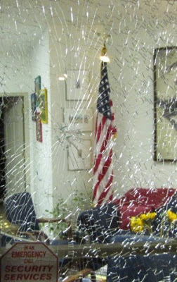

Go here to read "The ugly right wing reaction to the House vote gets personal and violent for a friend of mine."
Breaking windows is, by definition, violence to property. It is not violence to people. Throwing a brick into someone's face, as a collectivist poster wishes on me in a comment below, is violence to people. Here (forwarded by and vouched for by Newbius) is a garden variety example of apparently ideologically-driven violence to people, with intent to harm or kill. Note well the official reaction to this:
A Day in the Life of A Patriot
March 19, 2010 by admin
At approximately 11:45 a.m., on March 19th 2010, a friend and I were walking between sections of Parking Lot A on the George Mason University Fairfax campus. We encountered a two-lane street that bisects the parking lot. My friend paused at the near side of the intersection to adjust a load she was carrying and began to cross the street. Under my arm, I was carrying a non-partisan political sign that I had previously displayed at a rally in opposition to contentious legislation. At the time of this incident, I was not intentionally or overtly displaying the sign.
At the point where I was crossing the street, there is a narrow divider between the two lanes. As I crossed the first lane, I noticed a small-size, blue SUV approaching in the second lane. I stopped near the divider to yield to the vehicle. After I was stopped in-place near the divider, the driver of the SUV stopped about 15 feet short of my crossing path. The driver of the SUV then motioned to me to cross in front of his vehicle that was now at a complete stop. In an expeditious fashion, I began to cross in front of the stopped vehicle. When I was about two steps into the lane, I heard the engine of SUV rev, the horn sounded, and with my peripheral vision, I sensed the SUV rapidly approaching. I quickly ran out of the path of the SUV. As the SUV proceeded beyond me, a man leaned his head out of the open passenger side window and laughed. I shouted a remark at the man. The driver and the passenger of the vehicle were both male, in their mid-twenties, and had features indicating they were of Middle-Eastern descent.
There was a manned police cruiser near-by. The police cruiser approached me. I asked the officer if he saw what happened. He said (paraphrased), “I didn’t see what happened but I’m gonna’ go talk to them.” The officer pursued the SUV into a parking lot. I returned to the other side of the intersection to speak with my friend and asked if she saw what had happened. She indicated that she had. In the distance I noticed that the police cruiser was following the SUV inside the parking lot. I did not see the police officer approach the driver nor did I hear the police officer address the driver via a loud speaker. Then I did see the police cruiser move toward the exit of the parking lot.
Having recovered from the stress of the moment, I recognized that the driver had committed an act of assault upon me. At this point I decided to file a report of the assault with the police authorities on the scene. I attempted to flag down the police cruiser as the officer was exiting the parking lot. A by-stander noticed my call to the officer. The by-stander gained the attention of another near-by police officer in a separate police cruiser. This second officer, a female, responded, approached me and inquired regarding my need. I described to her the incident and indicated my intent to formally register a complaint against the driver of the SUV. As I was discussing the situation with the second police officer, the first police officer approached at took charge of the conversation.
Paraphrasing the officer, “Sir, the President of The United States is speaking in that building right over there. His speech on this campus will occur without a single incident.” At this point, another police officer joined to listen and hover over me.
I respectfully remarked that the speech by The President of The United States was not germane to the incident of assault. I calmly restated my intent to lodge a formal complaint against the driver of the SUV.
The officer responded (paraphrased), “We are just here helping out, you would have to contact the University police… but I’m gonna’ tell you right now, they are going to tell you the same thing, that there will be no incidents on this campus today, and if you press it with them they will arrest you for trespassing.”
He continued, “You look like a very smart man, so you should understand exactly what is going on here.”
Yes, dear reader, I do understand exactly what is going on here, and perhaps you do too. I do not know why the driver wanted to play ‘chicken’ with me as a pedestrian, but the police plainly stated why they were not going to do anything about it. They were directed to ensure the metrics of the big event told a story of perfection, maybe fake, but perfect.
There was nothing about my actions, my manner, or my speech that should provoke a university “student” motorist to harass me. There was nothing about my actions, my manner, or my speech that should provoke sworn police officers into non-action, avoidance, and moral inversion when I attempted to report a crime.
This incident is only one data point among a universe of flashes of conflict, deceit and thuggishness that have descended upon us. Why are things this way today? Perhaps stated as concisely as possible, things are this way today because America made a very serious mistake. America has given ultimate political power to a visible and invisible cabal that is antithetical to the values, principles and the rule of law of American society. The ruling group has effectively dispensed with the principles of our former success. In exchange, they have adopted, and now communicate to society, that the power of the state is all that matters while justice, decency, and virtue are merely artifacts of the past.
The way out of this wilderness can be found only by critical choices and commitments made by individuals; choices that will require decent people to get off of the sidelines and prepare to sacrifice a few of their personal indulgences in order to be responsible citizens within a self-governed nation.
When a nation fails to sustain an understanding of the distinction between good and evil, that nation has arrived in a place of great peril.
But for the DUmber crowd, let me explain what violence, real violence, is:
Sending IRS raid teams to someone's home, as the dear Arizona congresswoman voted for in this Enabling Act, in order to enforce a tyrannical law -- that is violence. People will be killed in the enforcement of this Intolerable Act.
Now I did not call for the vandalization of the windows of congresscritters, only local Demoncrat party HQs. But I can certainly understand why someone would.
I am trying to prevent civil war and communal killing, not start it, by warning those who do not understand the unintended consequences of THEIR actions.
Mike
III
33 comments:
As you noted in an earlier post, even these very marginal acts of property damage, not violence, are being labeled as "terrorism".
You might be interested to read this article, over at Ace of Spades, about what just happened to a real, honest to Allah terrorist: he was let go, because we were mean to him when we asked questions about what his buddies might do next.
I'm sure that those of us protesting a blatantly illegal grab of power will be treated with the same deference.
That is strange;
Wasn't a weatherman underground's nail bomb meant only to sabotage property?
just a pack of forum monkeys. everybody with a memory that doesn't wear diapers all day long knows that bricks through windows is just good old fashioned american tradition. note that nobody's even in the building when this is happening. otherwise, shall we then also talk about firing on disarmed military recruiters? throwing bombs at their doors while they're right inside?
in fact, why not do some local republican party HQs for good measure? surely they've earned it by failing to sufficiently resist. they don't get a pass on this, and losing seats in the 2010 election does not count for a thing. oh, oops, that's "dangerous rhetoric," right, demonrat-underground? why you would never!
Anon @ 4:38 asks:
"Wasn't a weatherman underground's nail bomb meant only to sabotage property?"
Not if it was deliberately packed with NAILS. Think McFly!!!!
Too bad ACORN is going bankrupt, huh?
Maybe an acorn tied to each brick would help deliver the message?
Eric
III
If you people keep this up Lon Horiuchi will pay your family a visit.
word verification: outoness
stop responding to their game. reframe reframe reframe. it's imperative that the left not be allowed to direct the conversation. instead of talking about tyranny, take their lines and run with em. "they want to dictate to us, but we will give them the dictatorship of free americans"
stop talking about socialism. talk about how due process was denied and the democrats gave the healthcare industry a huge bailout, as evidenced by the big jump in healthcare stocks today.
everything that gets said needs to be couched in left wing terminology. it makes it less cool / progressive for the university bunch, eliminates the left's talking points, and discredits the ideology from the inside.
Ah, cops. I'm not anti-cop, I'm pro sworn peace officer. You know, the whole Protect and Serve bit - not the code enforcers we have now who are just "following orders." Enjoy the videos.
http://www.freedomsphoenix.com/Article/065647-2010-03-01-4409-officer-jiggles.htm
http://www.freedomsphoenix.com/Article/065787-2010-03-03-4409-cops-vs-firefighters.htm
http://www.freedomsphoenix.com/Article/065945-2010-03-08-4409-not-guilty-vs-innocent.htm
Overheard on another Blog:
" .... I've read reports of violence already... bricks through party office windows... Guys, I understand the overwhelming urge to go out and break stuff... but don't do it. Don't do anything illegal... all you have to do is to get out and VOTE this November. American Depends on this now... Donate every dollar you can to whoever is running against whoever voted for this healthcare bill. Get your friends out and rally. Get your friends out to the Polls. These Jackasses need to be removed from Office. Kick these bums out."
Overheard on the Titanic:
"Don't worry about that hole. We'll fix that when we get to New York."
I hope to wake up tomorrow and find that this is growing, grown, and grown some more.
This quote:
stop responding to their game. reframe reframe reframe. it's imperative that the left not be allowed to direct the conversation. instead of talking about tyranny, take their lines and run with em. "they want to dictate to us, but we will give them the dictatorship of free americans"
stop talking about socialism. talk about how due process was denied and the democrats gave the healthcare industry a huge bailout, as evidenced by the big jump in healthcare stocks today.
everything that gets said needs to be couched in left wing terminology. it makes it less cool / progressive for the university bunch, eliminates the left's talking points, and discredits the ideology from the inside."
... is pretty good advice. That's how the left got where they are today - they reinvented the terms.
I was thinking that a marble and a slingshot might be useful for certain hard-to-reach windows...
What a bunch of pussies. One or two stories come out about the window breaking and you start to make excuses and whine about tradition and how you're not hurting anyone. Pussies. Keyboard commandos...little window busting tantrum throwing pussies. Where the fuck were you 8 years ago when the shit was really hitting the fan? No respect for any of you pussy babies what so ever.
CNN has the story now.
http://politicalticker.blogs.cnn.com/2010/03/22/reports-emerge-of-vandalism-at-democratic-offices/?fbid=D-O8o629OwY#more-96025
Not really apropos anything, but anyone remember "The Outlaw, Josey Wales"?
Two of the finest quotes come from that movie.
1. Senator: "The war's over. Our side won the war. Now we must busy ourselves winning the peace. And Fletcher, there's an old saying: To the victors belong the spoils."
Fletcher: "There's another old saying, Senator: Don't piss down my back and tell me it's raining"
and,
2. Lone Watie: 'We thought about it for a long time, "Endeavor to persevere." And when we had thought about it long enough, we declared war on the Union. '
Earlier this evening I went to the democratic underground website to read thier shit.
No doubt they're all coming here to read this website.
They're all whining about bricks......
Just wait until it turns to bullets.
I hate to say it, but it is terrorism. It is destruction of property in order to scare the liberals into submission.
Do they have it coming? Yes. They can't expect to keep encroaching without blow back.
But don't have any false senses of nobleness. You are merely answering tyranny with tyranny.
Perhaps a link to the original Window War post placed prominently might be in order, since you'll no doubt get a traffic boost from this?
"What a bunch of pussies. One or two stories come out about the window breaking and you start to make excuses and whine about tradition and how you're not hurting anyone. Pussies. Keyboard commandos...little window busting tantrum throwing pussies. Where the fuck were you 8 years ago when the shit was really hitting the fan? No respect for any of you pussy babies what so ever."
name me when you address me.
well old timer, i was stuck wasting time and money in the government schools you never did anything to get rid of. today i pay for your social security. i've only just recently been working long enough to earn the money to go out and do something about any of this. and i work for a government contractor, of course, because that's the only jobs there are for engineers anymore. unemployment in my age bracket is something like 25%. among 18-25 year olds it's running over 50%.
so, thanks for that.
you can address me to my face once, and only once, on april 19th. just show up on the potomac and come find me. i won't look too different from my thumbnail. don't forget to bring your rifle and a polite but meaningful sign. i'll have all of mine, with a big tall poster that says "tu ne cede malis."
make sure you approach between my 11 and 1 o'clock.
Both sides are parsing this differently, because they are using the other side's definitions. WE are the people who know that property is crystallized sweat, and that an assault on our possessions is an assault on ourselves. THEY are the people who think that property is a conditional right granted by the State, and that property can be redistributed at will. So yes, by our lights, we are attacking their persons. But they attacked us first and more. We've chosen to attack crystallized sweat rather than sweat glands; bricks are to revolution as waterboarding is to torture...OF COURSE it's torture (or it wouldn't work), but leaves no lasting damage.
I don't want to destroy property (no matter how much they deserve it) because it essentially buys into their worldview that property doesn't matter, and because it's unimaginative. But to fight purely on the level of ideas has already failed, primarily because we are not consistent about ideas. Why copy black anarchists when you can copy George Hayduke? There are all kinds of ways to prank a Democrat office to waste their time and make a public statement. Eric mentioned acorns...why not cover the front of the office with acorns, stuff their mailbox, etc.? Spraypaint ACORN logos on their windows. Never miss a chance to make them look ridiculous. There's a novel by F. Paul Smith called An enemy of the state which you all must read, in which a group called Kyfhons (who have forgotten that the name of their philosophy, KYFHO, was once an acronym for "Keep your f***ing hands off") have a planetary revolution without killing anybody. Their chief problem is not the State, but an emotionally disturbed individual who is allegedly on their side but wants to perform acts of terror.
I'm not telling anyone else what to do it, just offering what I hope will be a useful counterpoint.
when you get there, you can tell me who you are, and what i should have been doing, and if someone can vouch for the former, then i will take the latter into consideration.
in the meanwhile, find some free time to think about why it is the case that all historically notable political spats involve the smashing of windows.
and work on your apology to everyone else for accusing them of standing behind my opinion.
i don't expect to actually see the RNC feel one iota of pain from any of this, of course. i suggest it because there is no other way to attest to the complete absence of hypocrisy in these acts -- consider your reaction (within those past eight years near and dear to you) when bush jr. passed a massive spending increase for the medicare program. where were the bricks?
if you want to control the media, first you have to be in control. if you want to be in control, start with yourself.
Jesus haysus maramba!!!TERRORISM???
Are you FRAKING kidding me? Dont play their game of conflation. If you cant throw a rock through a window without worrying about being called a terrorist how do you expect that you will be able to shoot the bastards? Are you all waiting for some official declaration of war to happen before you are willing to take ANY action? This thing is not going to go hot all of a sudden and its not going to come about because Mike or anyone else goes on the intertube and proclaims it is time to shoot them. It will ratchet up and it will be surrounded in fog and confusion. THEY control the press so THEY will control the narative unless we make it clear enough to anyone with a brain what is going on. IT ALREADY HAS BEGUN! This is just shaping the battlefield.
Grenadier1
Congratulations! You've just fallen under the USA Patriot Act (THANKS BUSH!) and are now considered a domestic terrorist.
Nice job arm chair idiot. There's probably a SWAT team assembling right now. Better go hide patriot.
HAHAHAHA!
You teabaggers are more insane than I thought. No wonder normal Americans laugh at you. Willful property damage isn't violent?? Shooting out windows of a Congresswoman's office isn't violent? Making death threats against a Congresswoman's children isn't threatening violence? You're sick, sick people.
Funny how you wingers had no problem with the Patriot Act when you thought it only applied to brown people.
Throwing a brick through the window of a political office is domestic terrorism under the Patriot Act because it is a violent act intended to intimidate and send a political message. That's all YOUR law requires, not that you fly a 767 into a building. That's why us ACLU/ civil liberties types had a big problem with it. Not because we're Al Qaeda sympathizers.
YOU created the "we're tough on terrorism" message, YOU wanted to give the POTUS and the DOJ unprecedented power to detain and intimidate opponents, now YOU can suck on it.
And if you think this is Obama's totalitarism, you should talk to the anti-war protestors you were arrested miles away from the 2004 GOP convention in the heart of the most liberal city in the US.
Mike- why not do us all a favor and just ignore any anonymous posts? Even if Blogger has 'blocked' some folks like yrs trly, we can still sign our names or leave our recognizable symbols.
There appears to be one poor unemployed Mom's basement dweller who idolizes Chris Matthews and has nothing to do but send you one 'anonymous' piece of his scatological mind after another.
Whattaya say?
Yes, and some (maybe a lot, maybe MOST) of those killed will be IRS agents.
If THEY come to believe that the "that is a good thing".
If they don't, it most certainly will happen.
No, J3, let 'em talk. This last one was right...while I don't consider window smashing to be "terrorism", the Rethuglicans were the ones who set up the whole "War on terror" scam. Save some bricks for the RINOS.
"Its interesting that the Republicans want to fight the legality of making people buy health insurance. So, why are we not complaining about being forced to buy car insurance? Or are we being picky now?"
Well, auto insurance is forced upon us so that WE may pay for the recovery of health and wealth of OTHERS WE INJURE. It is making us responsible for that which we are responsible. That makes sense, to a degree.
But "Health Care" is being forced upon us so that we may cover.... uh, who exactly? Someone that doesn't have it? Someone I HAVEN'T INJURED. Someone for whom I have absolutely no obligation, yet you wish to see my hard earned cash, earned with the time and energy of my life, taken away so someone else can get it at a discount, or for free. People like you are thieves.
Health Care is NOT A RIGHT. A RIGHT does not place an OBLIGATION on others in order to be fulfilled, exercised or maintained. What you are describing is an ENTITLEMENT. And you SIR, and in no way ENTITLED to the fruits of my labor. Somebody I smack into on the road IS. You smoke and get cancer, it's on your head, not mine. You eat too many twinkies and develop Diabetes, look into the mirror for your blame... I'm not responsible for making you whole. You fudge pack and catch the Anally Injected Death Serum, it's up yours buddy, not mine!
Buy your own damned insurance. Or shall automobile insurance be Federally codified into our lives, enforced by the IRS, and given to any and all??
You pompous ass...
Oh.... I'm not a Republican, you socialist. I'm a Constitutionalist, morally and philosophically superior to your thieving ways.
What a scary bunch of internet tough guys you are. This site would be hilarious if it weren't so pathetic and depressing--bunch of delusional jerkoffs sitting around in your parents' basements quoting Thomas Paine and fetishizing the Minutemen.
When did the right-wing become a bunch of D and D nerds?
DOMESTIC TERRORISM DEFINED- Section 2331 of title 18, United States Code, is amended—
`(5) the term `domestic terrorism’ means activities that—
`(A) involve acts dangerous to human life that are a violation of the criminal laws of the United States or of any State;
`(B) appear to be intended—
`(i) to intimidate or coerce a civilian population;
`(ii) to influence the policy of a government by intimidation or coercion; or
`(iii) to affect the conduct of a government by mass destruction, assassination, or kidnapping; and
`(C) occur primarily within the territorial jurisdiction of the United States.’.
----
And might I add, you're a jerk for advocating violent acts, even if it's violence against property. Violence is the first choice of the incompetent.
Too funny. Can't wait until you get a visit from the LEA. It is going to happen, and when it does you'll have to lawyer up and it will cost you a couple grand. That will be tremendous and we will see how much of a armchair warrior you are after that occurs.
If you think HCR was something, wait until we absolutely shove Immigration reform down your throats. And there is nothing you can do about it. We have all the power - you have none. Smash some more windows and explain to law enforcement how it is just an act of political protest. Yeah - see how that works out. What a bunch of morons.
YEE HAW, lets stop fuckin' our cousins for just one second so we can try and scare the negro in office and his EVIL GUBMINT COMMUNIST CRONIES! Next we'll have a good ol' book burnin' and a lynchin' because the 21st century is scary and progress is EEEEVIL. lol you guys are the laughing stock of the rest of the world :)
Post a Comment